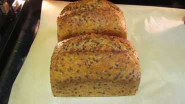

Pan Integral Multi-Semilla

Como hacer un pan de molde integral con fermentos naturales
Para crear este pan , exclusivamente de masa madre, utilizaremos un 100% de harina Integral
como tambien distinto tipos de semillas, especificamente: linaza, avena, semillas de zapallo y girasol
Para la mezcla de semilla necesitaremos:
- 70gr de avena
- 140gr de semillas de girasol
- 30gr de semillas de zapallo
- 80gr de linaza
- 350gr de agua
se deja reposar en frio toda la noche
Para la masa
- 1kg de harina Integral
- 750ml de agua
- 480gr de masa madre
- 17gr de sal
- 350gr de la mecla de semillas
- Mezclar la masa madre con el agua
- Añadir la harina con la sal y amasar por 15 minutos
- Al final del amsasado agregar la mezcla de semillas
- Dejar reposar la masa por 3 horas
- dividir en porciones de 600gr y al molde
- Reposar hasta doblar el volumen
- hornear a 245 grados por 40'